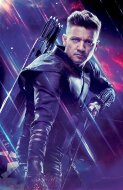

Selecione um personagem
- 
Capitão América
"Conhecido como Steve Rogers. Foi um soldado do exército dos Estados Unidos durante a Segunda Guerra Mundial e recebeu um soro experimental que o transformou em um super soldado. Aumentando sua força, agilidade e resistência e com com seu escudo indestrutível, ele se torna um vingador clássico"